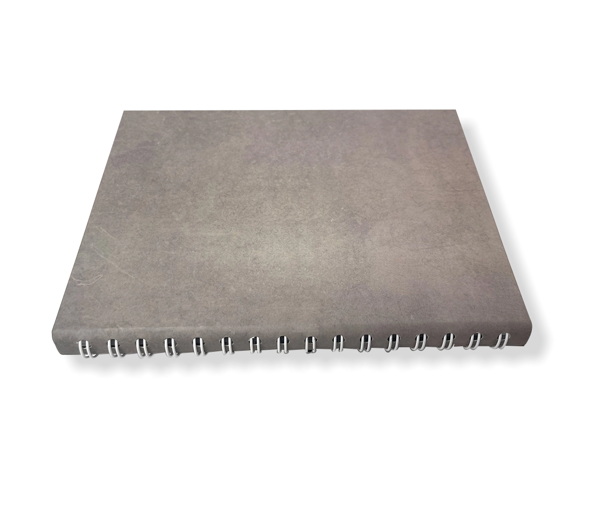

Dos Cousu Collé
Appelée aussi DCC, c'est la reliure la plus adaptée aux livres de forte pagination et fort grammage. La couture permet de renforcer le livre et accroit considérablement sa durée de vie.

A la japonaise
Une reliure très élégante pour des documents à faible pagination. Cette reliure convient parfaitement aux documents de luxe et aux menus.

Spirale
Appelée également Wire'o, cette reliure solide est parfaite pour les agendas, les documents de travail. En couleur ou transparente, elle peut aussi être élégante.

A la Copte
Pour des effets encore plus originaux, nous proposons cette reliure, qui donnera un effet"Bio".